Communication scientifique
Deux façons de faire circuler la science : la publication académique, écrite par et pour les chercheurs, et la médiation scientifique, qui la raconte au public. Le cours apprend à lire la première de façon critique et à pratiquer la seconde.
ICadrage du cours
Présenté en séance 1 (23/09/2026) : cadrage d'ensemble, évaluation, programme, articles à analyser, structure d'un article scientifique et de sa synthèse.
Modalités d'évaluation
- PDF sur Upedago, mardi 10 novembre dernier délai.
- Voir les consignes détaillées
- Enregistré, monté et habillé (compétences vues avec Victor Dubin et Agathe Gallo).
- Gros travail de script et de narration.
I·bRendu écrit : synthèse et analyse critique de LLMs
Objectif : analyser comment deux systèmes d'IA générative produisent la synthèse et le commentaire d'un article scientifique que tu as lu toi-même. La qualité de l'analyse dépend directement de la finesse de ta lecture.
Lire et annoter l'article
Avant toute interaction avec un LLM. Repère :
Faire produire le texte par deux IA
Choisis deux services dans la liste et note précisément le modèle utilisé et la date.
Le produit auquel tu accèdes (interface, site, appli) : Claude, ChatGPT, Gemini, Mistral. C'est une marque commerciale.
Le système qui génère le texte, choisi dans un menu en haut de la conversation. Chez Anthropic, Claude est le service ; Opus 5, Sonnet 5 ou Haiku 4.5 sont des modèles.
Texte à obtenir de chaque IA
- Synthèse de l'article : 12 000 signes.
- Commentaire : 3 000 à 3 500 signes, qui met l'article en lien avec l'actualité et montre comment les deux dialoguent.
Raconter et comparer les échanges
Une narration comparée du processus de production avec les deux LLM, appuyée sur des captures d'écran commentées, jusqu'au résultat jugé satisfaisant.
Vérifier tout ce qu'avance le premier texte
Sur le premier texte de chaque LLM : citations, données, arguments. Si c'est attribué à une source, vérifie l'exactitude. Sinon, retrouve l'origine de l'argument ou du chiffre.
Pages institutionnelles, rapports d'organismes, baromètres, presse. Citées en note de bas de page, référence complète + date de consultation.
Revues à comité de lecture (double aveugle), ouvrages, chapitres. Citées dans le texte (Auteur, année) + bibliographie finale APA.
Évaluer une source
- Qui est l'auteur, quel est son statut ?
- Source primaire (elle produit la donnée) ou secondaire (elle la reprend) ?
- Quel intérêt a celui qui publie, surtout une entreprise qui chiffre son propre secteur ?
- Toujours remonter à la source primaire : un article de presse qui cite un rapport n'est pas le rapport.
Comparer, puis confronter à l'article
Sur le premier texte de chaque LLM. D'abord entre eux (contenu retenu, structure, complexité, nuances et limites), puis confrontation systématique avec l'article, en citant page + paragraphe. Pour chaque écart, nomme sa nature et son importance :
Pour le commentaire d'actualité
- Les rapprochements sont-ils pertinents et exacts ?
- Les données sont-elles fiables et bien interprétées ?
- L'article éclaire-t-il vraiment l'actualité, ou est-il seulement juxtaposé ?
Un jugement argumenté repose sur trois appuis
« La synthèse de X est meilleure » ne vaut rien sans ces trois éléments.
Le carnet de bord · 15 000 à 20 000 signes espaces compris
- Introduction : l'article en bref, les deux services et modèles retenus, et pourquoi.
- Analyse critique des interactions et du processus de production (étape 1).
- Analyse critique des productions (étape 2).
- Conclusion réflexive.
- Bibliographie au format APA.
- Annexes : transcription complète des échanges avec les deux IA.
D'après « Synthèse écrite et analyse critique de LLMs », consignes reçues le 04/11.
IIObjectifs du cours
A. Deux grandes facettes
B. Porter un regard analytique
- De quelles institutions proviennent les discours ?
- Sur quelles bases ces discours s'appuient-ils ?
- Quels sont les formats de communication et leurs limites ?
- Comment se structurent ceux qui remettent en cause les institutions scientifiques ?
C. Pour vos études
- Travail individuel de réflexion et d'analyse.
- Se familiariser avec la littérature scientifique anglophone, essentielle pour la communication en ligne et les pratiques numériques.
- Acquérir des connaissances très récentes sur les pratiques et plateformes numériques.
- Lire facilement et rapidement un article anglophone.
- Identifier la structure d'un article pour en extraire l'essentiel, puis le restituer de façon analytique et critique, à l'écrit comme à l'oral.
D. Pour le monde professionnel
Deux formats maîtrisés : la synthèse analytique individuelle et le podcast de médiation en binôme.
- Renforcer les compétences d'analyse informationnelle.
- Expliquer simplement à l'oral un sujet complexe et scientifique.
- Porter un regard critique et informé sur les méthodes et résultats d'études.
- Renforcer les compétences linguistiques.
- Développer une pensée critique autonome.
IIIProgramme du semestre
- CM intro · 23/09Cadrage du cours, objectifs, évaluation
- CM2Sociologie des professions scientifiques
- CM3Histoire de la production des savoirs scientifiques
- CM4Comment la science produit-elle des inégalités ?
- CM5La médiation scientifique : concepts et enjeux
- CM6Socioéconomie des plateformes de publication en ligne
- CM7Écoute et évaluation collective de vos podcasts
Les Menstrueuses
- Marie Lafargue, maîtresse de conférences en droit privé (numérique, genre et santé)
- Camille Hémet, doctorante en sciences politiques
- Laura Symul, professeure en biostatistique, UCLouvain
- Maïa Alexaline et Zélia Breton, directrice scientifique et épidémiologiste-statisticienne chez Lyv
- Paola Craveiro, fondatrice de Vulvae, une app pour les douleurs vulvaires d'abord développée sous forme commerciale
IVArticles à analyser
À compléter Notes à venir.
VStructure d'un article scientifique
Une structure plus ou moins visible selon les revues, mais presque toujours la même. C'est elle qu'on repère en premier pour extraire l'essentiel et construire la synthèse.
La méthodologie tient en trois points :
Deux archives. D'un côté les documents fondateurs du jeu (surtout le white paper) et la presse ; de l'autre les posts de blogs, articles et le subreddit Axie Infinity, centrés sur deux moments de crise du jeu.
Approche qualitative empruntée aux cultural studies et à l'histoire des technologies : analyse conjoncturelle du white paper (le lire dans son contexte historique et politique) et suivi chronologique des réactions des joueurs aux crises.
Pas de consentement direct demandé (données publiques en ligne). En échange, les auteurs paraphrasent au lieu de citer et ne mettent pas de lien vers les posts contenant des infos personnelles sensibles (ex. candidatures au programme de « scholarship »).
VILa production des savoirs scientifiques
Les principaux cercles où se produisent les savoirs scientifiques. Ils vont du cœur institutionnel de la recherche jusqu'aux collectifs qui travaillent en dehors des institutions.
L'institution scientifique
- Enquêtes
- Expérimentations
Les formations universitaires
- Mémoire de recherche
- En entreprise : thèse CIFRE (convention industrielle de formation par la recherche)
- Recherches hybrides privé / public
Les collectifs de recherche autonomes
- Produisent du savoir en dehors des institutions
Notes de cours du 05/10. Le lien avec le programme (CM2 ou CM3) reste à préciser.
VIIThéorie scientifique ou prophétique ?
Avant de parler de « théorie scientifique », on revient au sens du mot. Il a changé de sens au fil de l'histoire, et en français il peut vouloir dire une chose et presque son contraire.
Étymologie
Pythagore
La théorie, c'est la contemplation dépassionnée d'une vérité rationnelle et immuable.
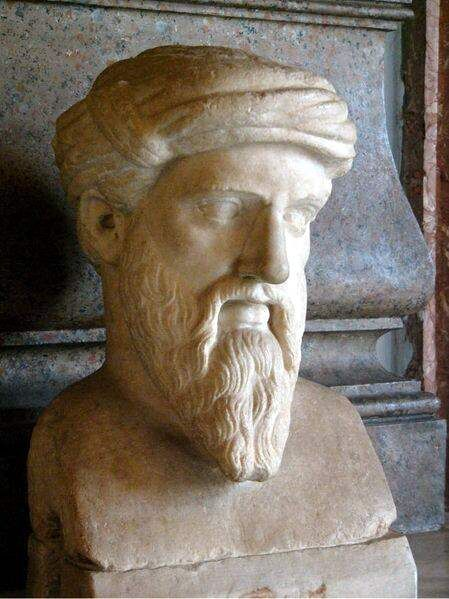
Aristote : trois manières de penser
Aristote distingue la pensée contemplative des deux manières de penser tournées vers l'extérieur.
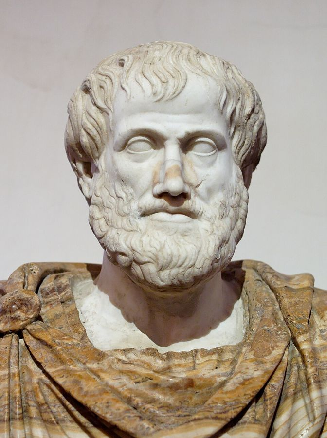
Pensée contemplative : créer de la connaissance pour elle-même.
Une manière de penser qui tend vers l'action.
Une manière de penser qui tend vers la production.
Un terme polysémique en français
Un ensemble de règles cohérentes avec l'observation des phénomènes.
La théorie de l'évolution.
Sous-entend l'inverse : on a affaire à une hypothèse non vérifiée.
« Ce n'est qu'une théorie. »
La théorie prophétique
Elle a l'apparence d'une théorie, mais aucune de ses caractéristiques.
- Elle fait référence au bon sens, aux évidences, à quelques observations ponctuelles.
- Pas de méthode d'identification des régularités qui soit systématisée.
- Pas de reproduction par autrui.
- Elle n'est donc pas réfutable : elle n'est ni vraie ni fausse.
- Elle se situe hors du cadre de la théorie aristotélicienne : sa visée n'est pas la vérité.
- Elle relève des pratiques des sophistes, des arts oratoires et rhétoriques : un exercice d'emprise, de prise de pouvoir sur autrui.
La théorie scientifique
- Elle s'inscrit dans la continuité de la théorie aristotélicienne.
- La méthode d'identification des régularités est reproductible à l'identique par n'importe qui.
- Elle est par essence réfutable (falsifiable).
- Elle est rétroactive : elle donne toujours les moyens de tenter de la contredire, afin d'en restreindre ou d'en préciser la portée.
- Elle peut en sortir renforcée, ou bien réfutée et remplacée par une autre, plus vraie.
| Théorie scientifique | Théorie prophétique | |
|---|---|---|
| Cadre | Continuité de la théorie aristotélicienne | Hors du cadre aristotélicien |
| S'appuie sur | L'observation des phénomènes | Le bon sens, les évidences, quelques observations ponctuelles |
| Méthode | Identification systématique des régularités | Aucune méthode systématisée |
| Reproduction | Reproductible à l'identique par n'importe qui | Non reproduite par autrui |
| Statut | Réfutable par essence : elle donne les moyens de la contredire | Irréfutable : ni vraie ni fausse |
| Visée | La vérité : renforcée, ou remplacée par une théorie plus vraie | L'emprise, le pouvoir (sophistes, rhétorique) |
Notes de cours du 05/10. La ligne « S'appuie sur » de la colonne scientifique reprend le sens initial vu plus haut. Les exemples en italique sont ajoutés pour illustrer.
Karl Popper : la falsifiabilité
Popper fait de la falsifiabilité le critère de la théorie scientifique. Attention au contresens :
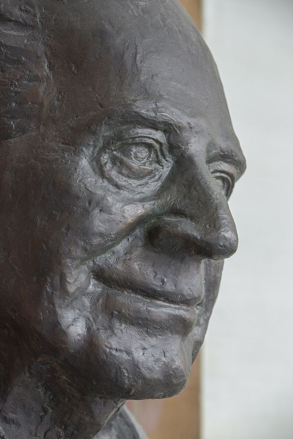
VIIILes Science Wars
Des canulars publiés dans des revues académiques pour attaquer des courants de recherche jugés peu rigoureux.
L'affaire Sokal
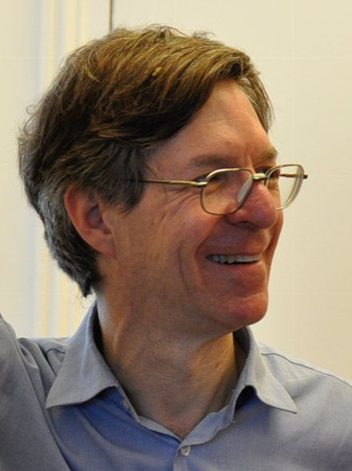
Contexte ajouté : le physicien Alan Sokal fait publier un article parodique dans la revue Social Text, puis révèle le canular.
L'affaire Grievance studies
Contexte ajouté : canular mené par Peter Boghossian, James Lindsay et Helen Pluckrose, qui ont soumis une vingtaine de faux articles sous ces noms.
Notes de cours du 05/10. Les lignes « Contexte ajouté » ne viennent pas des notes.
IXLes méthodes scientifiques
Les principales dimensions des méthodes scientifiques se présentent par paires opposées.
On provoque le phénomène dans des conditions contrôlées.
On observe le phénomène là où il se produit.
hypothèse → vérification empirique
observation empirique → théorisation
Données formalisées à des fins de mesures statistiques.
Données formatées pour créer des classifications et préciser des qualifications.
Dans les deux cas, quantitatif comme qualitatif, il faut un grand nombre de données.
Différentes épistémologies
Contexte ajouté : la réalité existe indépendamment du chercheur, on la connaît en observant et en mesurant des faits.
Contexte ajouté : la connaissance est construite par le chercheur et les acteurs, elle ne reflète pas une réalité extérieure.
Contexte ajouté : on cherche à comprendre le sens que les acteurs donnent à leurs actions.
Notes de cours du 05/10. Les définitions de la première paire et des trois épistémologies sont ajoutées, tes notes ne donnaient que les noms.
XLes limites du découpage strict prophète / scientifique
Opposer strictement théorie prophétique et théorie scientifique a ses limites. Dans les médias, des postures types brouillent la frontière.
Les postures médiatiques types
Elles comportent des risques catastrophiques :
- réputationnels pour le locuteur ou la locutrice ;
- pédagogiques pour les audiences.
Posture à géométrie variable
Deux discours séparés par des espaces institutionnels différents :
- Réseaux socionumériques et médias de masse traditionnels : des opinions et théories « prophétiques » sont formulées.
- Espaces scientifiques institutionnels et médiatiques (colloques, articles, médiation scientifique…) : des débats et théories scientifiques sont alimentés.
Posture « gloubi-boulga »
Une personne, un seul discours, qui mélange des genres épistémologiques incohérents entre eux :
- Ex. 1 : communication scientifique sur la forme, mais contenus issus de théories prophétiques.
- Ex. 2 : revendication d'un statut d'expert·e ou d'une légitimité scientifique (diplômes, titres…), accompagnée d'un discours « prophétique ».
Les exemples de la diapo
- Nature, « Trump links autism and Tylenol: is there any truth to it? » (Helen Pearson et Heidi Ledford, 22 septembre 2025). Le président américain répète « Don't take Tylenol », alors que les scientifiques jugent les preuves d'un lien entre ce médicament et l'autisme insuffisantes.
- Une photo de Donald Trump et Charlie Kirk à un meeting de Turning Point Action, et une photo de Robert F. Kennedy Jr au pupitre.
- Le Monde (avec AFP, 20 septembre 2025) : « Bernard Arnault qualifie Gabriel Zucman de “militant d'extrême gauche” qui cherche à “mettre à terre l'économie française” ». Le PDG de LVMH juge l'analyse fiscale de l'économiste « biaisée » ; Zucman répond que « la fébrilité n'autorise pas la calomnie » et nie toute appartenance à un parti.
- L'affiche du film Merci Patron !.
La logique de saturation cognitive par les médias
- Issue du livestream War Room de Steve Bannon.
- Énonciation de vérités alternatives qui reprennent des contenus d'Internet, à un rythme rapide, à la chaîne.
- Le public est saturé : il n'a plus le temps de vérifier chaque affirmation.
Contexte ajouté : Bannon a résumé cette stratégie par la formule « flood the zone » (inonder la zone d'informations). « Post-truth » a été élu mot de l'année 2016 par le dictionnaire Oxford.
Notes et diapo du cours du 05/10. Le cours ne précise pas quelle posture chaque exemple illustre. La place exacte de la saturation cognitive dans le plan reste à préciser. La dernière puce et la ligne « Contexte ajouté » ne viennent pas du cours.
XILa médiation scientifique
Cours du 04/11, notes et diapos.
Comment définir la médiation ?
- C'est une activité communicationnelle.
- Elle vise à mettre en relation et à produire du sens.
- Le médiateur occupe un rôle de tiers, d'intermédiaire entre plusieurs acteurs, ou entre un public et des connaissances.
- Il facilite la diffusion et la transmission de connaissances, et accompagne un public à s'approprier des connaissances : faire sens de contenus spécifiques, en fonction de ses ressources, de sa culture et de son expérience.
Une évolution au XXe siècle
Le paradigme de l'individu « acteur de sa découverte ». Les CCSTI (centres de culture scientifique, technique et industrielle) sont des lieux sans collections, donc sans mission de conservation du patrimoine. Créés dans les années 80 sous l'impulsion de Giscard, ils servent une stratégie nationale pour favoriser l'appropriation et l'acceptabilité des innovations techniques par la population. Leur mission est éducative : médiation scientifique, diffusion des savoirs et mise en culture des sciences.
Enjeux contemporains
- Les SHS sont le parent pauvre de la médiation.
- Les scientifiques sont rarement de « bons clients » pour les médias. Les journalistes sollicitent plus facilement des « experts » liés à des think tanks, à des organisations professionnelles ou à des lobbys. La médiation se transforme alors en influence (exemple actuel : l'IA).
- Depuis le Covid, le rôle de médiation a été largement abandonné par le gouvernement.
- Les discours scientifiques sont en concurrence avec la désinformation, parfois produite par l'État (attaques contre le CDC aux États-Unis).
Analyser un extrait (fictif) sur le Big Data
Le Big Data est un phénomène socio-technique, qui repose sur l'interaction entre technologie, analyse et mythologie. Pour danah boyd et Kate Crawford, ce n'est pas qu'une technique : c'est aussi une croyance, l'idée que plus on a de données, plus on s'approche de la vérité.
Les problèmes de l'extrait, à éviter :
- Une définition savante dès l'entrée, avant même d'avoir lancé le podcast.
- Une traduction littérale de l'anglais, sans reformulation : un copier-coller traduit.
- Des adjectifs (« passionnant », « brillantes », « a révolutionné ») qui font de la médiation une célébration de la science.
- Une injonction morale (« méfiez-vous ! ») sans clés de compréhension.
- Des savoirs non situés : qui sont ces chercheuses, spécialistes de quoi, publié où, quand, sur quel pays ?
Ce qu'on pourrait faire : simplifier le Big Data, l'ancrer dans des pratiques quotidiennes, montrer concrètement ce que fait la recherche plutôt que de qualifier sa valeur, et situer la recherche. Ne pas dire « ne touchez pas à cet objet ! », mais « on l'utilise tous les jours, et on ne sait pas vraiment comment il a été conçu ».
Apprivoiser les concepts
En médiation, on ne se contente pas de donner une définition : il faut la mettre en récit et l'ancrer dans les pratiques des publics. Exemple : chaque trace numérique (une écoute, une recherche, un pas compté) ne dit pas grand-chose. Des milliards de traces, analysées par des machines, dessinent des tendances : c'est le Big Data.
Exercices
L'article en une phrase
Relis l'abstract, puis complète le gabarit sans reprendre un seul mot du résumé : « [Qui] a étudié [quoi] à partir de [quel matériau] pour comprendre [quelle question]. Elle ou il montre que [résultat principal]. »
Chasser le jargon, apprivoiser les concepts
Relève 3 à 5 concepts sans lesquels l'article ne tient pas. Pour chacun, rédige une reformulation en mots de tous les jours et un exemple concret. Exemple du cours : « digital divide » (fracture numérique), reformulé en « tout le monde n'a pas le même accès aux technologies, ni la même aisance », illustré par des démarches administratives 100 % dématérialisées.
La fabrique des images
À partir de l'idée principale de l'article, rédige trois images : une métaphore (une seule image pour l'idée centrale), une comparaison (rapprocher le phénomène d'une pratique connue, hors numérique si possible) et un exemple incarné (un cas, une personne, un objet plutôt qu'une généralité). Exemple du cours : « une donnée ne tombe pas du ciel, quelqu'un a décidé quoi compter et comment », illustré par la photo de vacances (le cadrage construit la photo) et par le sondage au café.
Le travail se fait en binôme, sur l'un des deux articles choisis. Il faut mettre en œuvre différentes techniques de médiation.
Repères historiques : musées, éducation et zoos humains
L'affiche officielle de l'Exposition de 1931 montre déjà la mise en scène de l'altérité : « le tour du monde en un jour », des visages présentés comme des types humains.
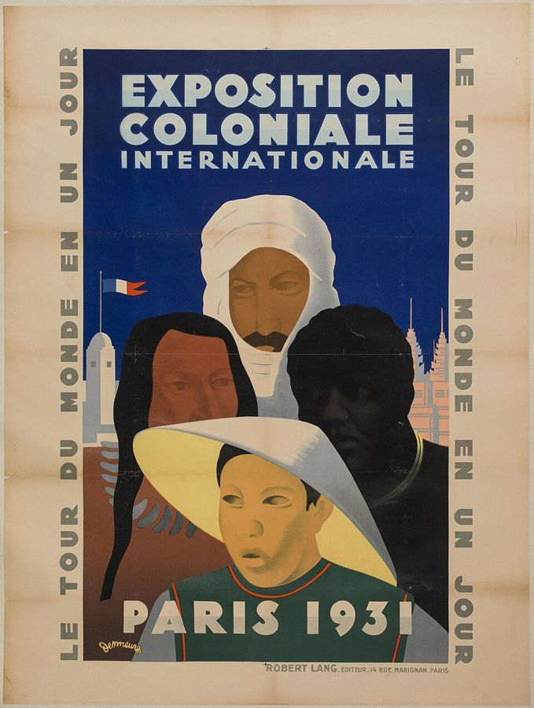
- Au XIXe siècle, l'ouverture des musées au public est liée à la naissance des États-nations. Les musées diffusent un récit historique national et homogène, pour créer un sentiment national.
- L'éducation populaire est présentée comme une mission civilisatrice envers les classes populaires. Des guides destinés aux ouvriers leur apprennent comment s'habiller et se comporter, pour façonner le citoyen occidental idéal.
- En 1931, l'Exposition coloniale internationale de Paris présente des zoos humains : une centaine de Kanaks (Nouvelle-Calédonie) sont recrutés sous un faux prétexte, amenés à Paris par bateau, et plusieurs meurent pendant la traversée. Sur place, certains sont dévêtus et forcés de jouer le rôle de « cannibales féroces » pour les visiteurs du Jardin d'acclimatation.
- La vulgarisation a alors servi à construire une opposition « nous » / « eux » (l'altérité). Le terme historique est celui d'« expositions d'ethnographie coloniale ».
Une brève chronologie de la médiation scientifique
- 1937 : le Palais de la Découverte (Paris) sort la science des laboratoires et la montre sous forme de spectacles.
- 1969 : l'Exploratorium (San Francisco) invente les expositions « hands-on ». Toucher, jusque-là interdit, devient un mode de visite.
- 1979 : premier CCSTI en France, La Casemate à Grenoble (centre de culture technique, scientifique et industrielle, tel qu'écrit sur la diapositive).
- 1986 : la Cité des sciences et de l'industrie ouvre à Paris.
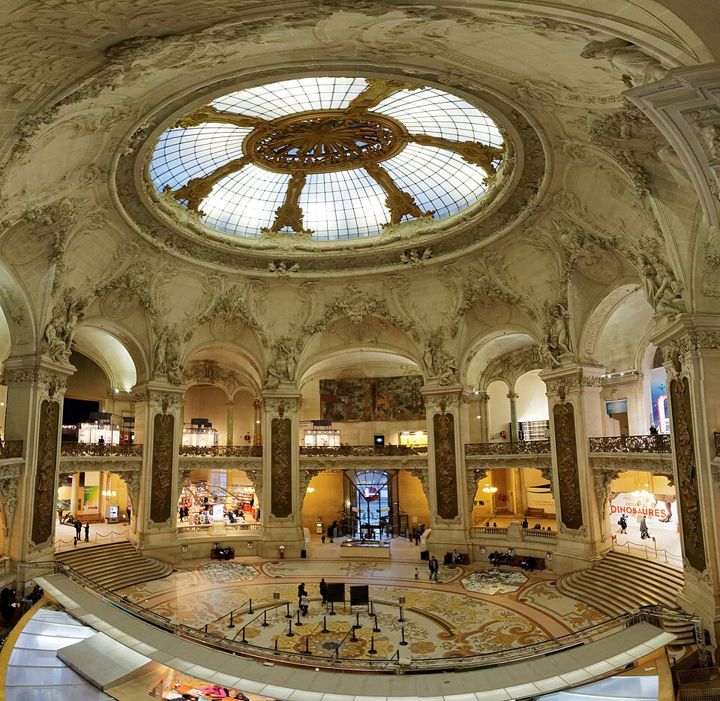
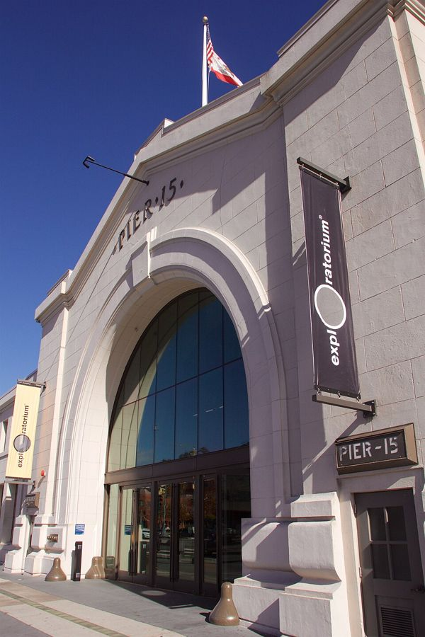
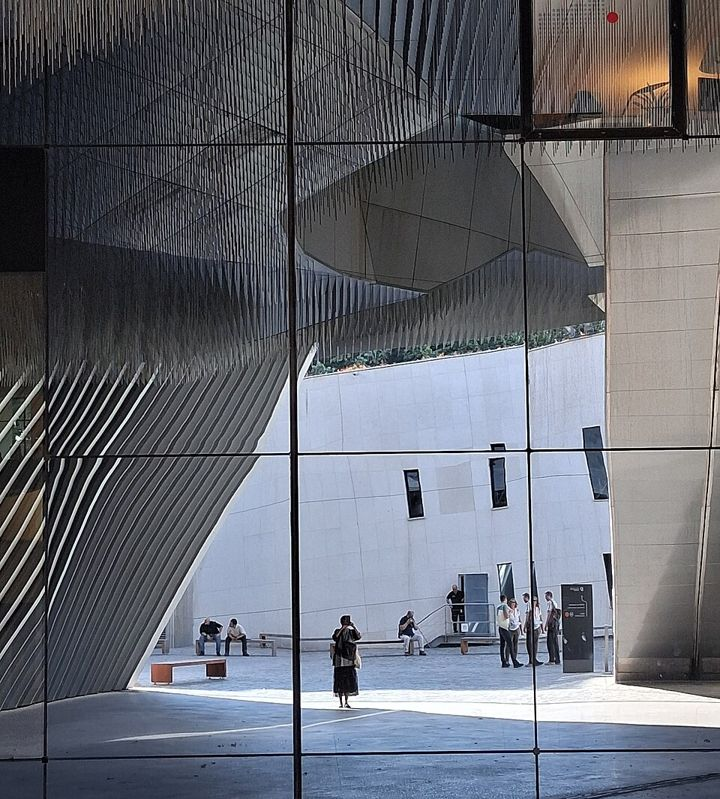
Deux conceptions de la médiation
Proche de la vulgarisation
Visée institutionnelle : diffuser le savoir des scientifiques vers les profanes. Modèle vertical, qui ne remet pas en question la séparation entre savants et publics.
Proche de l'éducation populaire
Visée émancipatrice : permettre aux publics de s'approprier les savoirs, de leur donner du sens, et même de participer à leur production.
À retenir pour la suite du cours
La médiation du XIXe siècle, comme la vulgarisation, s'est déroulée dans des hiérarchies sociales et raciales qui définissent qui est l'objet du savoir et qui a la légitimité pour le détenir. Ces hiérarchies apparaissent encore dans les musées et les dispositifs de médiation actuels. Les pratiques de médiation doivent donc rester attentives aux hiérarchies qu'elles peuvent maintenir ou renforcer.
L'édition scientifique (cours du 12/11)
Derrière une revue scientifique, il y a d'abord des enseignants-chercheurs et des chercheurs CNRS bénévoles. Leur travail vise le triomphe de la vérité scientifique, pas la gloire.
- La plupart du temps, une revue scientifique est non lucrative : les maigres « bénéfices » sont réinjectés dans son fonctionnement.
- Toute la chaîne de production repose donc sur un bénévolat de personnes qui trouvent du temps libre en dehors de leurs activités d'enseignement : gestion administrative de leur structure, recherche de financements, collecte et analyse de données, veille sur l'édition de leur domaine, lecture de tout ce qui est publié sur leur sujet, participation à des colloques pour s'informer et réseauter.
- L'enjeu économique est de commercialiser un numéro à intervalle régulier. Le nombre de numéros publiés par an conditionne le modèle économique, et le travail éditorial n'est pas le même selon ce rythme.
- Exemples : la revue Hermès publie 3 numéros thématiques par an, de 30 articles de 6 à 10 pages environ ; la revue Questions de communication publie 2 numéros thématiques par an, de 5 à 8 articles de 16 à 20 pages.
La diversité des théories empiristes
Au-delà de l'opposition entre théories scientifiques et prophétiques, toute théorie est d'abord une identification de régularités. Les pratiques empiriques dites « traditionnelles » peuvent être réappropriées sous forme de théorie scientifique, mais ce passage pose plusieurs questions :
- Collecte systématique de preuves ? Souvent oui, mais sur un temps très long (plusieurs générations).
- Analyse reproductible et réfutable ? Oui quand elle repose sur des essais-erreurs validés sur un temps long. Non quand des interprétations prophétiques émergent et se mêlent aux validations, puis fusionnent dans des pratiques culturelles et des croyances stabilisées.
- Validation par une institution scientifique ? Non : la validation repose souvent sur une autorité sociale d'un autre type, souvent religieuse, thérapeutique, et/ou liée à des hiérarchies d'âge, d'ancienneté, de genre ou d'ethnie.
- Les analyses « traditionnelles » sont réexplorées puis réadaptées selon des critères scientifiques, avec un risque d'appropriation culturelle de ces savoirs, sans prise en compte des impacts rétroactifs sur les cultures sources.
- Ce regain d'intérêt des Occidentaux pour ces théories est souvent tardif, sauf si une industrialisation simple a été rapidement possible.
Posture à risque à repérer : ethnocentrisme et appropriation culturelle, sans égard pour les rétroactions sur les cultures sources.
Exemples développés à l'oral (cours du 12/11)
Sur la photo, le motif du haut a été piqué à la main selon la méthode traditionnelle, les deux du bas à la machine : même motif, pratique sociale différente.
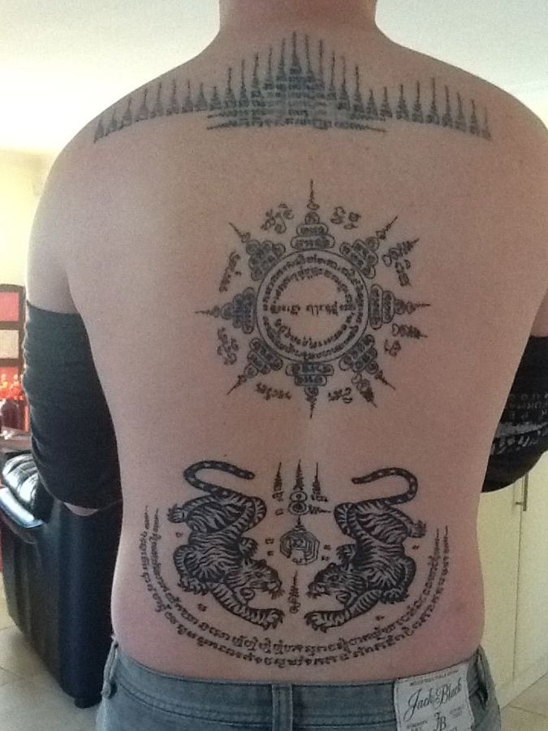
Reconstitué à partir d'une transcription vocale très bruitée : les noms propres et les chiffres sont à vérifier.
- Les tatouages sacrés d'Asie du Sud-Est (sak yant) : ils sont faits par des maîtres avec une tige métallique frappée, et non à la machine électrique. C'est plus long et plus douloureux, mais c'est pour des raisons culturelles : les boxeurs qui les portent y cherchent une protection contre le mauvais œil. Le savoir se transmet de maître à disciple. Quand des célébrités occidentales reprennent seulement les motifs, la pratique change complètement d'univers social : elle devient mode, visibilité médiatique et industrie culturelle. C'est l'appropriation culturelle.
- Une pratique empirique validée par une autorité sociale (religieuse ou thérapeutique) peut se stabiliser en culture sur des générations. Un protocole scientifique occidental donnerait peut-être des résultats négatifs, mais la pratique reste fondée sur des observations : entre prophétie et science, il y a un continuum.
- La transe étudiée par la science : une chercheuse française, initiée à une pratique de transe, a travaillé avec des neurologues (Suisse, Belgique) pour mesurer par électroencéphalogramme (EEG) ce qui se passe dans le cerveau pendant la transe, et montrer qu'il s'agit d'un état cérébral distinct.
Comment fonctionne une revue scientifique
- Les auteurs ne sont pas payés. La plupart des revues sont portées par des associations (structure non lucrative) : l'argent existe, mais il est intégralement réinjecté dans le fonctionnement. Seuls d'éventuels salariés (secrétariat de rédaction) sont rémunérés.
- La motivation des chercheurs n'est pas que la carrière : produire des connaissances originales est une contribution au fonctionnement de la société.
- Le comité scientifique réunit des chercheurs très connus de la discipline : il sert à identifier la revue et à lui donner du prestige, mais il intervient peu au quotidien. Le comité de rédaction fait le gros du travail : suivre en parallèle tous les numéros en préparation et faire avancer les articles.
- L'évaluation par les pairs : entre la soumission et la publication, comptez souvent six mois ou plus, et en général une à quatre versions de l'article. Les relecteurs n'ont pas tous la même expertise : certains retours sont très utiles, d'autres complètement à côté de la plaque. Un article peut mettre des années à paraître.
- Une fois l'article publié, c'est aux auteurs d'en faire la médiation et la promotion (réseaux, journalistes scientifiques).
Outils de veille scientifique
- Calenda : le calendrier francophone des sciences humaines et sociales (France, Québec, Suisse…). Il centralise colloques, journées d'étude et appels à contributions.
- Les associations savantes, calquées sur les disciplines : par exemple la SFSIC (Société française des sciences de l'information et de la communication). Elles éditent souvent des revues de la discipline et organisent des colloques, sortes de salons professionnels de la recherche.
- Les appels à contributions montrent les thématiques en train d'émerger : utile pour savoir ce qui se prépare avant que les articles paraissent.
Histoire et modèle économique des revues
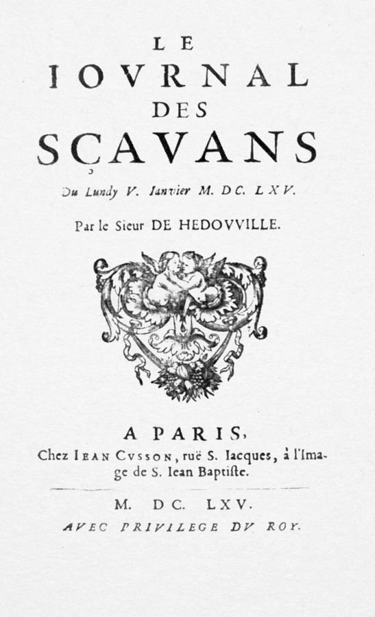
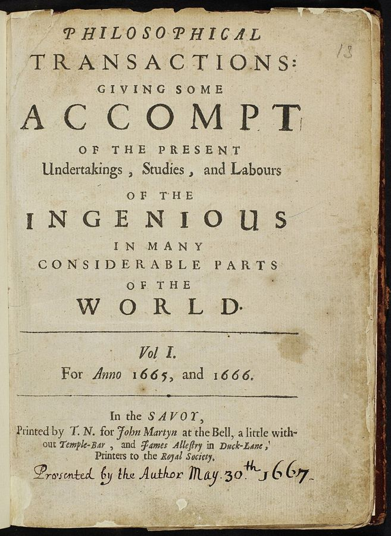
- Les premières revues savantes naissent au XVIIe siècle, en même temps en France (Journal des sçavans, 1665) et en Angleterre (Philosophical Transactions de la Royal Society).
- Dès le départ : des numéros expédiés sur abonnement, et non vendus en librairie. Ensuite, les bibliothèques universitaires mutualisent les achats, ce qui ouvre l'accès aux étudiants et aux chercheurs.
- Une deuxième économie, symbolique : la carrière des chercheurs dépend de leurs publications. Les chercheurs sont à la fois producteurs et consommateurs des revues, et l'institution garantit la demande.
- Avec le numérique, des distributeurs (plateformes qui agrègent les revues en bouquets, comme Cairn) s'ajoutent entre les revues et les bibliothèques.
- Les revues imposent souvent un embargo (de 1 à 5 ans environ) avant que l'article puisse être diffusé librement. L'auteur peut en général diffuser sa propre version (manuscrit auteur), mais pas la version mise en page par la revue.
- Le libre accès : l'archive ouverte HAL (CNRS), des plateformes comme OpenEdition, et des revues en accès gratuit sous licence Creative Commons.
Le cadenas ouvert orange est le symbole international du libre accès : on le retrouve sur les articles consultables gratuitement.
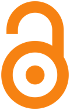
Moteurs de recherche et accès aux articles
- Google Scholar trie par défaut par « pertinence » : ce n'est pas seulement le nombre de citations (il compte, mais l'algorithme n'est pas public). Il ne faut donc pas prendre cette hiérarchie pour argent comptant : mieux vaut changer le tri (par date, entre deux dates) pour reprendre la main, comme sur les réseaux sociaux.
- Bon réflexe : tester plusieurs mots-clés (Google Trends peut indiquer ceux qui circulent dans les médias) et, dans un dossier, expliquer sa méthode de recherche : moteur utilisé, mots-clés, nombre d'articles retenus.
- Open Library négocie avec les éditeurs des licences de prêt en ligne, comme une bibliothèque : on attend qu'une licence se libère pour emprunter l'ouvrage.
- Le piratage (sites comme Sci-Hub) répond à un problème d'accès : les abonnements sont très chers, même les universités renoncent à certains, et dans beaucoup de pays c'est le seul accès possible.
Plateformes de médiation scientifique
- The Conversation : média en ligne où des chercheurs écrivent gratuitement, accompagnés par des journalistes salariés, à partir de leurs propres recherches publiées. Il fonctionne par appels à articles. Le modèle reprend celui de l'édition académique (auteurs non payés). Il existe plusieurs éditions nationales.
- Hypothèses (OpenEdition) : plateforme de carnets de recherche, des blogs tenus par des chercheurs. Ce sont souvent des doctorants qui parlent de leur thèse, ou des projets financés qui cherchent de la visibilité.
XIIConcevoir une table ronde
Support « Médiation scientifique : comment organiser un débat public ? » (Marion Coville et Bruno Vétel), reçu le 17/11.
Dans une table ronde, on organise la parole des autres pour la rendre intelligible à un public plus ou moins néophyte. On la retrouve à la sortie d'un livre, en projection-débat, dans un festival, dans les mondes militants et politiques, ou en entreprise sous forme de webinaire.
- Elle sert à représenter une diversité de points de vue, d'identités et d'expériences.
- Elle convient aux sujets complexes, qui demandent plusieurs regards pour être compris.
- Elle peut réunir des opinions différentes, à condition que chacun·e respecte le cadre de son expertise.
Les erreurs à éviter
Inviter les « bons clients »
Les conditions de travail des médias favorisent des « bons clients », voire de « faux experts », toujours disponibles et qui ont un avis sur tout. Leur présence médiatique renforce leur référencement, sur les moteurs de recherche comme sur les réseaux.
En médiation, on ne cherche ni la personne la plus populaire ni celle qui a toujours quelque chose à dire, mais celle qui a une expérience ou une expertise précise. Cela demande du temps de recherche.
Le dévoiement du « pluralisme »
Représenter « les différents points de vue » sert aujourd'hui à justifier la présence de discours haineux, racistes et anti-démocratiques dans les médias.
Ce n'est pas « inviter les pour et les contre ». C'est réunir des expertises différentes mais complémentaires pour aborder un problème social complexe.
Le « café du commerce »
Une table ronde n'est pas un lieu où chacun·e donne son opinion sur le monde. Chaque invité·e a une expertise scientifique, professionnelle ou expérientielle, et la discussion est orientée pour la valoriser plutôt que vers des généralités.
L'improvisation
Une table ronde n'est ni spontanée ni improvisée : elle est préparée et scriptée. Sinon les échanges partent dans tous les sens, s'éternisent, ou une personne accapare la parole. Elle est donc toujours modérée par quelqu'un qui veille au temps et au fil de la discussion.
Exemple : un débat sur le mouvement lycéen
| « Le pour et le contre » | Expertises complémentaires | |
|---|---|---|
| Qui | Un lycéen qui a manifesté face à un homme politique qui veut interdire les manifestations | Un·e porte-parole du mouvement lycéen · un·e représentant·e syndical·e enseignant·e · un·e juriste · un·e (ancien·ne) membre du gouvernement |
| Ce que chacun apporte | Une opinion, à défendre jusqu'au dernier mot | Revendications et conditions d'étude · conditions de travail des enseignants · ce qui est légal dans les blocages, arrestations et gardes à vue · la fabrique des politiques éducatives |
| Logique | L'arène : on regarde qui gagne | Chacun·e est invité·e pour sa légitimité sur une facette du problème, pas « parce qu'il a une opinion » |
Les grandes étapes
Partir du public
Une première recherche cerne les discours existants sur le thème, puis on reformule la thématique selon le public. Exemple de l'OMNSH, une conférence sur le jeu vidéo en médiathèque :
Combien d'invité·es, combien de temps
Le nombre d'invité·es dépend du temps de parole disponible (lié au public, à ses contraintes et à son attention) et du degré d'approfondissement visé. Comptez 1 h à 1 h 30, plus environ 30 minutes d'échange avec le public.
Une recherche, pas un appel à volontaires
Erreurs courantes : « Qui veut participer ? », « Personne ne travaille sur le sujet », « Si le SEO le dit, c'est que cette personne convient ».
Une bonne recherche ressemble à une revue de littérature ou à une veille : bases de données (qui a publié quoi sur des thèmes proches), médias et podcasts (qui s'est exprimé), parties prenantes (institutions, associations, entreprises).
3 bis · Rester flexible
Il est fréquent qu'un·e invité·e pressenti·e ne soit pas disponible. On adapte alors le sujet et le fil de discussion aux personnes présentes. Astuce : un titre assez large pour la communication print, préparée longtemps à l'avance, puis un sous-titre plus précis dans la communication numérique.
Le naturel, ça se prépare
Une table ronde qui semble « fluide et spontanée » a été préparée et scriptée. Des questions lancées à la volée pour « faire spontané » sont un cauchemar pour les invité·es comme pour le public, et reproduisent sans qu'on s'en rende compte de nombreux rapports de domination.
- Le script se construit à partir des champs d'expertise des invité·es : il faut se renseigner sur eux et les lire.
- On ne demande pas leur opinion (sauf éventuellement en fin de table ronde, en ouverture sur l'actualité).
- On rédige des questions qui les amènent à parler de leur expertise, dans un langage accessible au public visé.
- Ce sont les questions, relances et enchaînements de l'animateur·rice qui créent du sens et du lien entre les prises de parole, comme en entretien. C'est lui ou elle qui porte l'essentiel de la médiation.
La méthode de la modératrice, en trois étapes
- Définir les thèmes incontournables, selon la problématique, les expertises des intervenant·es et le public. Exemple EVARS (éducation à la vie affective, relationnelle et sexuelle) : les coulisses de la conception du programme, la mise en œuvre concrète, la prise en compte du numérique (3 thèmes issus des expertises) et les attaques contre l'EVARS (1 thème issu de l'actualité).
- Appeler chaque participant·e, le plus tôt possible, dès qu'il ou elle confirme. On lui demande comment être présenté·e, de raconter son expérience ou sa recherche, et ce qui est incontournable pour elle. Si un thème prévu ne l'inspire pas, on lui pose la question directement : inutile de garder une question à laquelle personne n'a de réponse.
- Rédiger le fil de discussion : des questions qui ciblent un ou plusieurs intervenant·es plutôt que « tout le monde » (cela permet de resituer la personne et de donner du contexte). Un bon fil est organisé en thématiques progressives, nomme la personne visée par chaque question, répartit équitablement la parole et respecte le temps. On l'envoie aux invité·es pour qu'ils se préparent et le valident.
Points de vigilance pendant la table ronde
- Le respect du temps, encore et encore.
- Le recentrage, en grande partie assuré par le script envoyé à l'avance.
- Faire dialoguer des intervenant·es aux statuts et cultures différents (une scientifique, une cinéaste, une militante).
- Ne pas laisser un·e intervenant·e seul·e face à certaines questions du public : au minimum reformuler, parfois recadrer explicitement.
Exercice : le fil de discussion « Santé des femmes : innover dans l'intimité »
Applications de suivi des douleurs, outils d'accompagnement thérapeutique, données des applis de suivi du cycle : ces technologies s'inscrivent dans une histoire plus longue, celle de la minimisation des douleurs dites « féminines », des errances diagnostiques qui durent des années et des luttes des patientes. Comment innove-t-on aujourd'hui pour la santé des femmes ?
Les invitées de l'exercice, Camille Hémet, Laura Symul, Zélia Breton, Paola Craveiro et Maëliss Le Bricon, recoupent celles de la journée Les Menstrueuses du 19/11.
Une fiche personnage par invitée (3 sources minimum)
Les thématiques doivent être précises (« prise en charge de la douleur », « luttes des patientes »). « Santé des femmes » ne suffit pas : c'est le thème de toute la table ronde. Mise en commun en tour de table.
Quelle « casquette » sur chaque thématique commune ?
La question n'est pas « quelle est son opinion ? » mais : compte tenu de son métier, de son expertise, de sa position sociale, sur quelle facette du problème peut-elle nous renseigner ? Exemple avec l'endométriose :
Conseil : un tableau des expertises (thématiques en lignes, invitées en colonnes), avec « hors de son champ d'expertise » quand c'est le cas. Pour choisir et ordonner les thématiques : richesse de ce qu'il y a à dire, partage équitable de la parole, pertinence pour le sujet, caractère incontournable (contexte, actualité, discours médiatiques habituels).
Écrire sa partie du script, en cinq éléments
- Introduction de la modératrice : un constat de départ, ce qui a changé, puis une tension formulée en question qui annonce la partie. « La musculation a longtemps été considérée comme une pratique masculine… Faut-il y voir une émancipation, ou une nouvelle injonction à travailler son corps ? »
- Une question par invitée concernée, ancrée dans ses propres travaux : le public doit comprendre pourquoi on lui pose cette question. « Germaine Whey, vous avez mené des entretiens avec des femmes qui pratiquent la musculation. Comment racontent-elles leur entrée dans cette pratique ? »
- Une question croisée à deux ou trois invitées qui abordent le même objet depuis des places différentes. Elle fait apparaître une tension sans demander à l'une de juger l'autre. Cycle menstruel et entraînement : la chercheuse dit ce qu'en sait la recherche, l'influenceur comment ces conseils arrivent dans ses contenus.
- Une relance par question : approfondir un discours, demander un exemple concret, ou rebondir sur ce qu'une autre invitée a dit.
- Une transition : reprendre un point qui vient d'être dit, nommer ce qui reste ouvert, annoncer la partie suivante (à ajuster en direct). Pour la dernière partie : une question ouverte à toutes, en une ou deux phrases chacune.
Les invité·es des exemples (Germaine Whey, Monique Squat, Jean Michel Haltère, Nathalie Legday, Créatine Martin) sont fictifs.
XIIIConférence « Les Menstrueuses » (Espace Mendès France, 19/11)
Journée à l'Espace Mendès France, jeudi 19/11 : introduction juridique puis table ronde sur les douleurs gynécologiques, les applications de santé et la place des patientes dans la recherche, et questions du public sur les données. C'est la vraie table ronde que préparait l'exercice de la section XII. Contenu tiré d'une transcription automatique des enregistrements : noms propres et chiffres à vérifier.
Les intervenantes
| Intervenante | Casquette | Ce qu'elle apporte |
|---|---|---|
| Marie Lafargue | Maîtresse de conférences en droit privé | Introduction : numérique, genre et santé au travail, et ce que dit le droit |
| La modératrice | Sociologue, elle-même atteinte d'endométriose | Le fil de la table ronde ; un article en cours sur les recherches menées à partir des applis de suivi du cycle |
| Laura Symul (en visio) | Biostatisticienne (UCLouvain), ancienne patiente en errance | Les données des applis comme instrument de mesure du cycle |
| Camille Hémet | Docteure en science politique (Université Paris / UQAM) | Les récits de patientes et les groupes d'entraide en ligne |
| Paola Craveiro | Fondatrice et présidente de Vulvae (appli puis association) | Les pathologies vulvaires, le financement d'une FemTech, la recherche avec une université italienne |
| Zélia Breton | Démographe, docteure en épidémiologie (thèse CIFRE Inserm + Lyv), cheffe de projet R&D chez Lyv | L'appli Lyv Endo : contenus, modèle économique, recherche |
| Maëliss Le Bricon | Artiste-chercheuse (collectif Rivage, TnBA, Bordeaux Montaigne, labo ARTES) | La simulation en santé et les patientes enquêtrices |
1. Introduction : numérique, genre et santé au travail
Marie Lafargue part d'une approche systémique (causalité circulaire) : le numérique, le genre et la santé au travail agissent les uns sur les autres, d'où la nécessité d'un regard pluridisciplinaire.
- Des risques invisibilisés : selon le CESE, les risques professionnels ne sont pas aussi visibles selon le genre. En 2023, près de la moitié des salariées déclaraient une santé mentale dégradée. S'y ajoutent une charge mentale numérique et un risque de cyberharcèlement deux fois plus élevé pour les femmes.
- Des outils pensés au masculin : l'algorithme de recrutement d'Amazon entraîné sur dix ans de profils masculins, des exosquelettes inadaptés au corps des femmes, des casques de réalité virtuelle qui donnent plus de malaises aux femmes.
- Un droit fragmenté : droit du travail et de la santé (le DUERP doit intégrer les risques pour les femmes et les minorités de genre), harcèlement, non-discrimination (algorithme de diffusion d'offres qui montre le soin aux femmes et le management aux hommes), RGPD (données de santé sensibles, consentement), AI Act (les systèmes de recrutement sont « à haut risque »).
- Les applis de suivi du cycle : la DGCCRF en a contrôlé 9 en 2024-2025 : 4 mises en conformité au titre des dispositifs médicaux, 1 retrait, 4 injonctions pour pratiques commerciales trompeuses. Le règlement européen de 2025 sur l'espace européen des données de santé s'appliquera par étapes à partir de 2027.
- Au-delà du droit : accords collectifs, chartes, audits, RSE. Le rapport du Sénat parle de « maux invisibles ». Un atelier du matin portait sur une « sécurité sociale de la menstruation ».
2. La table ronde en trois parties, puis les questions
L'invisibilité des douleurs
Les douleurs « féminines » sont méprisées : l'endométriose a longtemps été vue comme de l'hystérie, une maladie de femmes carriéristes, « guérie par la grossesse ».
Camille Hémet dégage quatre éléments des récits de patientes :
Paola Craveiro : les pathologies vulvaires (vulvodynie, vestibulodynie, vaginisme, lichen scléreux) mettent 7 à 8 ans à être diagnostiquées. Son enquête en ligne (environ 2 000 répondantes) : 99 % ont subi des violences gynécologiques, 90 % une douleur jamais prise en charge. En 2020, environ 300 articles scientifiques sur la vestibulodynie contre plus de 46 000 sur la dysfonction érectile.
Les applis et la place des patientes
Vulvae (lancée en 2020) : rendre visible l'invisible (suivi quotidien de la douleur et rapport pour le médecin), documenter les solutions contre l'errance thérapeutique, créer des données.
Lyv Endo : diagnostic de l'endométriose en 10 ans environ ; les recommandations (HAS, sociétés savantes) incluent désormais des interventions non médicamenteuses. Trois fondations (vécu de centaines de patientes, littérature scientifique, expertise médicale) et cinq piliers de contenus.
Le financement : Lyv vit d'investisseurs à impact, de fonds publics, d'un prêt BPI, d'assureurs et d'entreprises, et a déposé un dossier à la HAS pour un remboursement. Vulvae s'est entendu dire que ces pathologies étaient « de niche » ou « de confort » (alors qu'elles touchent 10 à 20 % des femmes) ; un investisseur s'est retiré 9 jours avant la signature, l'entreprise a fait faillite et est devenue une association. Aux États-Unis, des termes comme « women's health » sont désormais censurés dans la recherche financée.
Les groupes en ligne (Camille Hémet : groupes Facebook privés, Discord, WhatsApp d'association) sont des refuges où se construit un espace partagé de perception (des métaphores pour dire la douleur), des ressources concrètes (noms de gynécos, exercices) et un récit de sa propre maladie. Paola Craveiro rappelle le risque de pratiques non validées, d'où l'intérêt d'y associer des professionnel·les.
Les patientes dans la recherche
Maëliss Le Bricon : la simulation en santé fait jouer des scénarios par des comédien·nes, filmés, suivis d'un débriefing où la « patiente » dit ce qu'elle a ressenti. Elle construit l'alliance thérapeutique, mais sert surtout aux infirmier·es, bien moins aux médecins. « Celui qui pose les questions a le pouvoir » : des patientes enquêtrices, la cohorte ComPaRe (AP-HP) et sa question « baguette magique » (41 % veulent surtout que la maladie soit connue et reconnue), une co-recherche sur les causes environnementales de l'endométriose (dioxine).
Laura Symul : les applis comme instrument de mesure de l'effet du cycle sur d'autres maladies, avec des modèles statistiques qui estiment des phases cachées du cycle (et leur incertitude).
Paola Craveiro : une étude de prévalence avec une université italienne, menée dans un espace privé de l'appli. Objectif de 1 000 réponses en 18 mois, atteint en 2 mois et demi grâce au storytelling.
Zélia Breton : des études plus courtes avec des données de qualité, mais un problème d'attrition ; des collaborations public-privé.
Protéger les données, y accéder pour la recherche
La modératrice puis le public interrogent la protection des données des utilisatrices : jusqu'où les utiliser au nom de la recherche en santé des femmes ?
- Zélia Breton : s'inscrire avec son e-mail sur une appli d'endométriose est déjà une donnée de santé (une liste d'adresses piratée révèle un diagnostic). Chez Lyv, analyses d'impact, accès aux données selon le rôle dans l'entreprise, et pour les chercheurs, un protocole qui fixe précisément les données transmises. Lyv est un dispositif médical de classe I, certifié.
- Paola Craveiro : Vulvae n'était pas un dispositif médical, donc beaucoup moins de contraintes. Le manque de contrôle a entraîné des dérives dans certaines applis, mais trop de normes coûte cher dans un domaine peu financé.
- Marie Lafargue : il faut distinguer application bien-être et dispositif médical, qui ne relèvent pas de la même réglementation (règlement européen de 2017 sur les dispositifs médicaux, nouveau règlement sur les données de santé appliqué par étapes). Contraignant pour les entreprises, mais essentiel : c'est ce qui distingue l'Europe des États-Unis.
- Camille Hémet : les groupes en ligne sont très peu modérés. Une modératrice y vend une formation à 5 000 € qui promet de guérir le vaginisme en trois mois. Les patientes ne savent pas toujours que ce qu'elles y racontent peut être récupéré par des personnes qui veulent en tirer de l'argent.
- Laura Symul : en labo, les données sont désidentifiées, mais l'anonymat n'est jamais totalement garanti. Données d'applis et d'essais cliniques sont traitées de la même façon, sur les mêmes serveurs. Il reste un gros facteur humain : les chercheurs s'engagent à supprimer les données (ex. la grande base génétique britannique), sans réel moyen technique de vérifier.
Comment une recherche se monte avec une appli
- Au cas par cas : selon le budget, le temps des salarié·es qui extraient les variables, et si les données existent vraiment. Une appli est conçue pour être facile à utiliser, pas comme un dispositif de recherche : ce qui n'a pas été prévu à la conception (ex. le temps passé dans l'appli) n'est jamais collecté.
- Pas de vente des données dans les cas étudiés par la modératrice. On paie seulement quand des chercheurs font passer un questionnaire via l'appli : cela devient une prestation de diffusion.
- Chez Lyv, les sujets doivent correspondre à ce que l'appli collecte (ex. revue de littérature sur l'alimentation et les symptômes, sport à distance via l'appli comparé au présentiel). L'entreprise sert de terrain, parfois de co-chercheuse, ou fournit seulement les données sans intervenir pour éviter les conflits d'intérêts.
Une idée à retenir : l'injustice épistémique
Concept de Miranda Fricker : les femmes ne sont pas crues quand elles parlent de leurs douleurs, et ne sont pas reconnues comme productrices de savoirs. La modératrice raconte que 1 200 étudiant·es en médecine lui ont dit qu'elle était « la première patiente qu'on entend ». Toute la table ronde montre des patientes qui produisent du savoir : récits, groupes, données d'applis, enquêtes.
XIVGlossaire
- Publication académique
- À compléter séance 1
- Médiation scientifique
- À compléter séance 1
- Theôria
- Du grec : contempler, observer, examiner. Chez Aristote, la pensée contemplative qui crée de la connaissance pour elle-même.
- Praxis
- Chez Aristote, une manière de penser qui tend vers l'action.
- Poiesis
- Chez Aristote, une manière de penser qui tend vers la production.
- Théorie prophétique
- Discours fondé sur le bon sens et quelques observations ponctuelles, sans méthode systématique ni reproduction : irréfutable, ni vrai ni faux, il vise l'emprise plutôt que la vérité.
- Sophistes
- Maîtres des arts oratoires et de la rhétorique dans la Grèce antique. Leur pratique sert ici de modèle à la théorie prophétique : convaincre et dominer plutôt que chercher le vrai.
- Réfutabilité
- Propre à la théorie scientifique : elle donne toujours les moyens de tenter de la contredire. Elle en sort renforcée, ou réfutée et remplacée par une théorie plus vraie.
- Falsifiabilité
- Critère de Karl Popper (Logik der Forschung, 1934) : une théorie T est falsifiable si, dans le cas où elle serait fausse, on peut démontrer qu'elle est fausse. Cela ne veut pas dire que T est fausse.
- Science Wars
- Affrontements autour de la rigueur de certaines sciences humaines, illustrés par les canulars Sokal (cultural studies, postmodernisme) et Grievance studies (gender studies).
- Hypothético-déductive
- Méthode qui part d'une hypothèse puis la vérifie de façon empirique.
- Inductive
- Méthode qui part de l'observation empirique pour aller vers la théorisation.
- Post-vérité
- (post-truth, 2016-2022) Situation où des vérités alternatives circulent plus vite qu'on ne peut les vérifier. Le cours la rattache au livestream War Room de Steve Bannon.
- Saturation cognitive
- Logique médiatique qui enchaîne les affirmations à un rythme rapide, à la chaîne, à partir de contenus d'Internet, jusqu'à saturer l'attention du public.
- Posture à géométrie variable
- Deux discours séparés selon l'espace : prophétique sur les réseaux et dans les médias de masse, scientifique en colloques et dans les articles (ex. Didier Raoult).
- Posture « gloubi-boulga »
- Un seul discours qui mélange des genres épistémologiques incohérents : forme scientifique et contenu prophétique, ou titre d'expert et discours prophétique (ex. RFK Jr, Charlie Kirk).
- Table ronde
- Format de médiation où l'on organise la parole de plusieurs invité·es aux expertises complémentaires pour rendre un sujet complexe intelligible à un public. Préparée, scriptée et modérée.
- « Bon client »
- Intervenant toujours disponible et qui a un avis sur tout, recherché par les médias pour sa facilité plutôt que pour une expertise précise.
- Fil de discussion
- Le script d'une table ronde : thématiques progressives, questions nominatives, parole répartie, temps respecté. Envoyé aux invité·es pour validation.
- Question croisée
- Question adressée à deux ou trois invité·es qui abordent le même objet depuis des places différentes, pour faire apparaître une tension sans demander à l'un·e de juger l'autre.
- Relance
- Question de suivi : approfondir un discours, demander un exemple concret ou rebondir sur ce qu'un·e autre invité·e a dit.
- Thèse CIFRE
- Convention industrielle de formation par la recherche : une thèse réalisée en entreprise.
- Approche systémique
- Lecture par la causalité circulaire : plusieurs facteurs (ici numérique, genre, santé au travail) s'influencent mutuellement, ce qui demande un regard pluridisciplinaire.
- Régulation inclusive du numérique
- Encadrer les outils numériques (droit, accords collectifs, chartes, audits, RSE) pour qu'ils ne reproduisent pas les inégalités de genre.
- Errance médicale
- Les années passées sans diagnostic ni prise en charge adaptée (environ 10 ans pour l'endométriose, 7 à 8 ans pour les pathologies vulvaires).
- FemTech
- Les entreprises et applications de santé consacrées aux femmes (suivi du cycle, endométriose, douleurs vulvaires…).
- Injustice épistémique
- Concept de Miranda Fricker : une personne n'est pas crue, ou pas reconnue comme productrice de savoir, en raison de ce qu'elle est.
- Simulation en santé
- Formation des soignant·es par des scénarios joués par des comédien·nes, filmés, puis débriefés avec la « patiente » sur son ressenti.
- Alliance thérapeutique
- La relation de confiance et de collaboration entre soignant·e et patient·e.
- Dispositif médical / appli bien-être
- Une appli qui a une finalité médicale est un dispositif médical, soumis au règlement européen de 2017 (classes, certification). Une appli « bien-être » échappe à ces contraintes.
- Données désidentifiées
- Données dont on a retiré les variables qui identifient directement la personne. L'anonymat n'est pas pour autant garanti à 100 %.
- Comité d'éthique
- Instance qui doit approuver toute recherche sur des humains avant qu'elle commence ; condition pour publier.
- Attrition
- La perte progressive de participant·es au fil d'une étude (ici, les utilisatrices qui cessent de remplir l'appli).
XVRévisions
- Écrit : carnet de bord de 15 000 à 20 000 signes sur deux IA qui synthétisent (12 000 signes) et commentent (3 000-3 500) un article. Même premier prompt, fact-checking du premier texte, écarts cités page + paragraphe. PDF sur Upedago le mardi 10/11.
- Oral : podcast de 6 minutes en binôme, monté et habillé.
- Deux facettes : publications académiques et médiation scientifique.
- Trois cercles de production des savoirs : institution scientifique (enquêtes, expérimentations), formations universitaires (mémoire, thèse CIFRE, recherche hybride privé/public) et collectifs de recherche autonomes.
- « Théorie » vient du grec theôria (contempler, observer, examiner). Aristote l'oppose à la praxis (action) et à la poiesis (production). En français, le mot désigne soit des règles cohérentes avec l'observation, soit une hypothèse non vérifiée.
- La théorie prophétique s'appuie sur le bon sens et des observations ponctuelles, sans méthode ni reproduction. Elle est irréfutable (ni vraie ni fausse) et vise l'emprise, comme chez les sophistes, pas la vérité.
- La théorie scientifique prolonge Aristote : méthode reproductible à l'identique par n'importe qui, réfutable par essence, elle donne les moyens de la contredire et en sort renforcée ou remplacée par une théorie plus vraie.
- Popper, Logik der Forschung (1934) : falsifiable ne veut pas dire faux, mais « si T est fausse, on peut le démontrer ».
- Science Wars : affaire Sokal (cultural studies, postmodernisme) et affaire Grievance studies (gender studies, faux auteurs Helen Wilson, Richard Baldwin, M. Smith, 2018).
- Méthodes : expérimentale vs observation in vivo ; hypothético-déductive (hypothèse → vérification) vs inductive (observation → théorie) ; quantitative (mesures statistiques) vs qualitative (classifications). Les deux dernières demandent beaucoup de données.
- Épistémologies : positivisme, constructivisme, interprétativisme.
- Limites du découpage prophète / scientifique : postures médiatiques à risques réputationnels (locuteur) et pédagogiques (audiences). A. Géométrie variable (Raoult) : deux discours selon l'espace. B. Gloubi-boulga (RFK Jr, Kirk) : un seul discours qui mélange les genres. Saturation cognitive et post-vérité (2016-2022), War Room de Steve Bannon : vérités alternatives à la chaîne.
- Table ronde : organiser la parole d'invité·es aux expertises complémentaires (pas « le pour et le contre », pas de « bons clients », pas de café du commerce). Quatre étapes : thème et problématique selon le public, dimensionner (1 h à 1 h 30 + ~30 min de public), identifier les intervenant·es comme une veille (et rester flexible), organiser les échanges. Méthode : thèmes incontournables → appel à chaque invité·e → fil de discussion envoyé et validé. Script d'une partie : intro, une question par invitée, question croisée, relances, transition.
- Conférence « Les Menstrueuses » (19/11) : approche systémique numérique × genre × santé au travail et droit fragmenté (DUERP, RGPD, AI Act, DGCCRF sur 9 applis). Douleurs invisibilisées : minimisation, violences gynécologiques, errance médicale, ordre hétérosexuel. Applis Vulvae et Lyv Endo : rendre visible, documenter, créer des données ; financement difficile (Vulvae devenue association). Patientes productrices de savoirs : groupes en ligne, simulation en santé, ComPaRe, données d'applis. Injustice épistémique (Fricker). Questions sur les données : une inscription est déjà une donnée de santé ; appli bien-être ≠ dispositif médical ; données désidentifiées mais facteur humain ; une recherche avec une appli = contact, comité d'éthique, accord juridique, au cas par cas.
- Une méthodologie se lit en trois points : corpus, méthode, éthique.
Les idées clés des prochains CM s'ajouteront au fil des séances.